Male Butterfly Betta

The butterfly betta is a much-sought-after freshwater tropical fish. It is extremely popular, both because of its striking and unusual colors and its distinctive shape.
Male Crowntail Betta
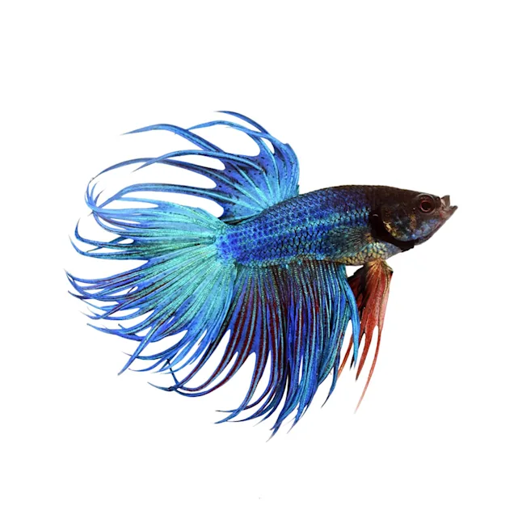
The crowntail betta fish is one of the most popular small freshwater species in the US for one main reason: their beautiful caudal fins!
Male Halfmoon Betta
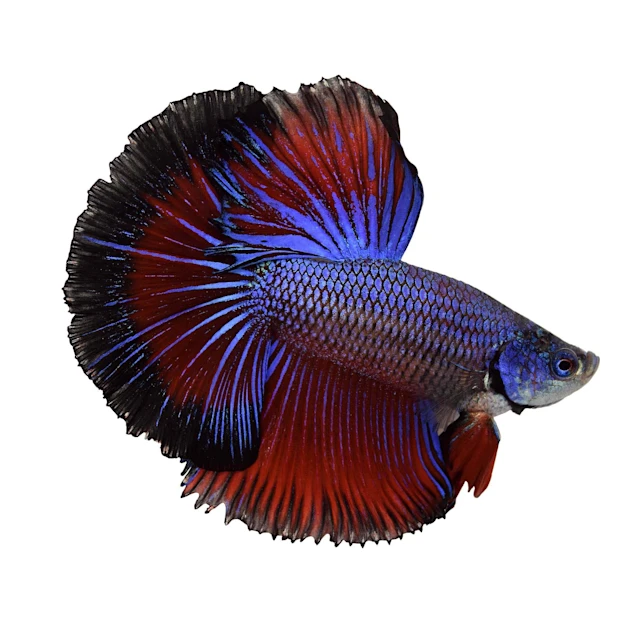
The halfmoon betta is a beautiful freshwater fish that’s part of the greater betta fish family. It has strikingly bright colors and exceptional half-moon-shaped fins.
Male Paradise Betta
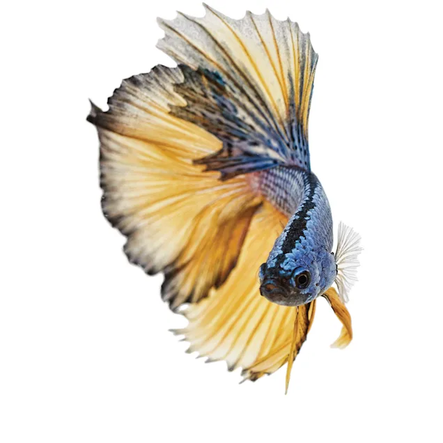
Paradise betta is a made-up name that is sometimes used as a general term to talk about the species of betta fish commonly found in pet stores (as opposed to the ones in the wild). And sometimes the name paradise betta is used as an alternate moniker for the mustard gas betta, a particular variety of betta fish.
Male Rosetail Betta
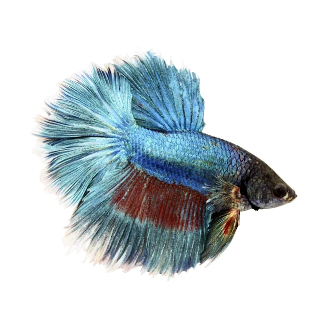
The Rosetail Betta is a variation of the half-moon where the total spread of the caudal fin is larger than 180°.
Male Veiltail Betta
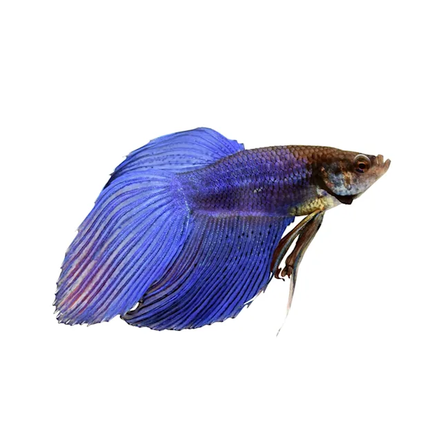
The male of this variation has a long, flowing downwards swooping tail. It comes in many different color variations and the overall appearance is quite remarkable..
Shubunkin Goldfish
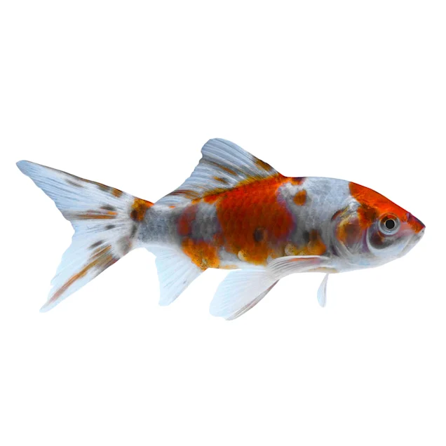
The Shubunkin is a type of Goldfish that comes in a wide variety of colors patterns, typically a combination of red, black and orange speckled on a white body.
Red Cap Oranda Goldfish
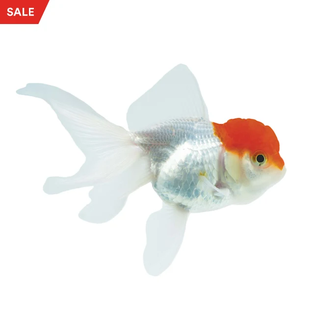
The Red Cap Oranda Goldfish has a pearly white body and fins with metallic scales. They can be distinguished by their large red "hood" that covers their head.
Calico Ryukin Goldfish
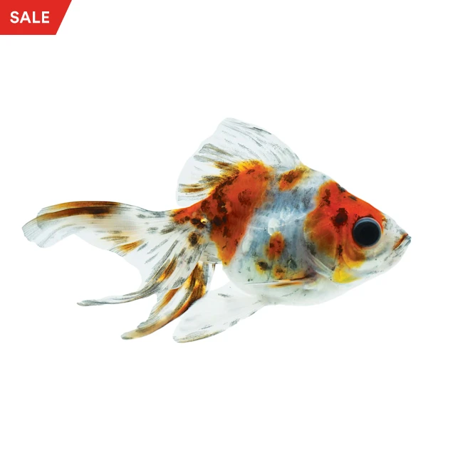
The Calico Ryukin Goldfish has a white body with markings of red, orange and black. Each specimen is unique with their combinations of colors. All Ryukin Goldfish have a hump right behind its head, curved backbone, fate belly and long fins.
Imported Koi
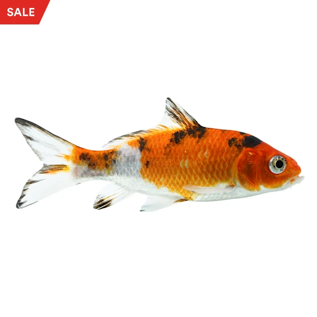
Assorted Imported Koi come in a variety of colors and patterns; many are platinum or metallic, which makes them all the more exciting.
Domestic Koi
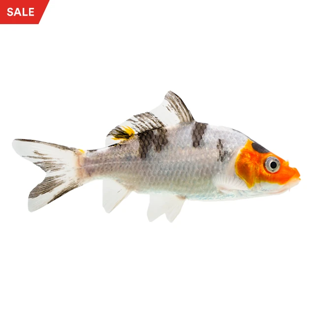
Assorted Domestic Koi are known to be especially hardy and are bred within the United States.
Butterfly Koi
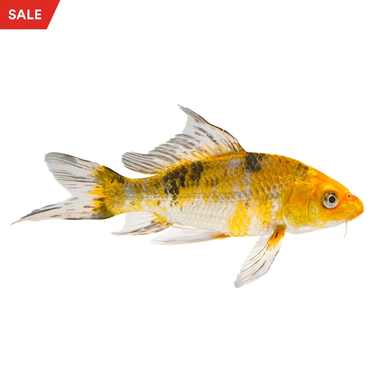
The Mixed Butterfly Koi is not identified by its colors or pattern, but by their fins. Butterfly Koi have elongated fins that flow through the water, resembling the wings of butterflies.
Aqueon LED 10 Gallon Aquarium Kit
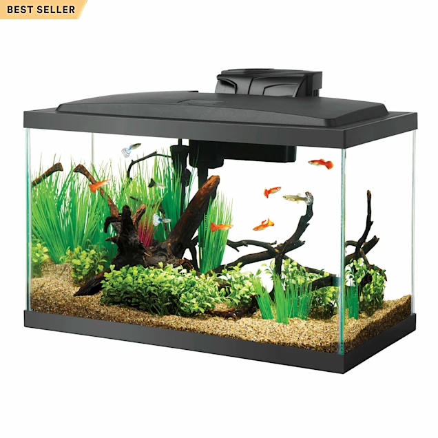
LED boxed kits offer a complete habitat with LED lighting to bring the aquarium to life. The energy saving low-profile LED hood features cool white modules for total illumination, a convenient feeding door in the front and breakout sections in the back for popular accessories.
Fluval 5 Gallon Spec V Aquarium Kit
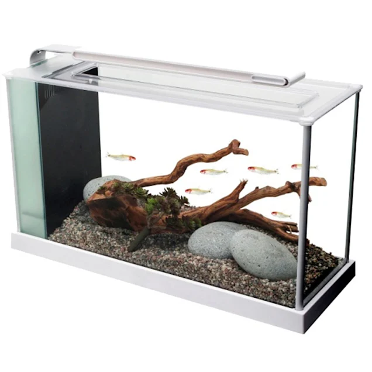
White 5 gallon freshwater aquarium kit that includes nearly everything you need to get started. Includes a powerful pump with adjustable flow, filter with carbon and biological inserts, and LED lamps. Simple to set up and maintain. 20.5" L x 7.5" W x 11.6" H
API Pond Fish Food
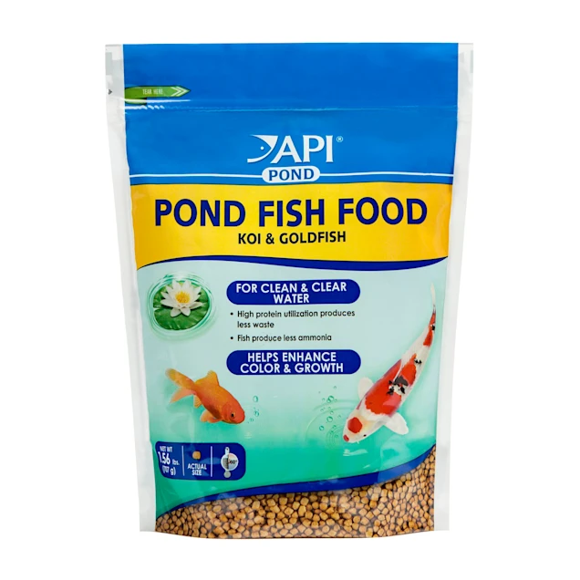
Superior pellet diet for all pond fish. Helps with enhanced growth and reduced waste. High utilization protein process and inclusion of zeolite results in cleaner, clearer water.
Aqueon Shrimp Pellets Fish Food

6.5 oz., Made with premium ingredients for daily nutrition for tropical fish, loaches, goldfish, catfish and other bottom feeders. Highly digestible sinking pellets.
Omega One Super Veggie Green Seaweed
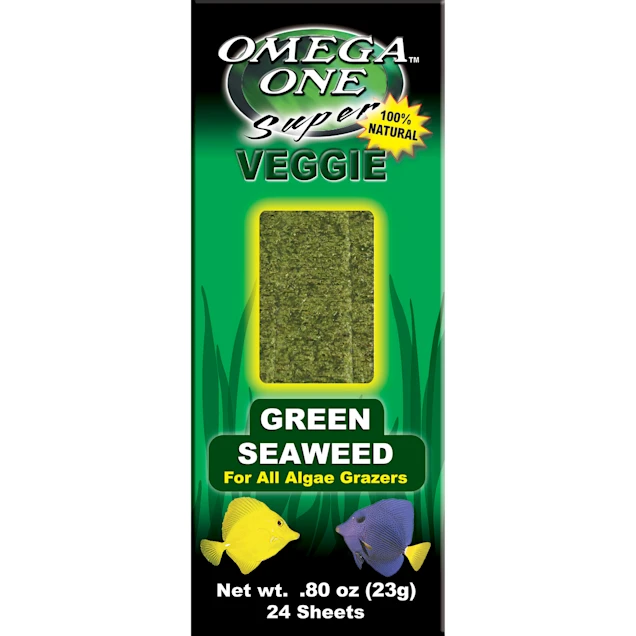
.8 oz., Made with the finest seaweed available, an excellent veggie treat for omnivores! The re-sealable bag keeps the seaweed fresh and pre-cut pieces are easy to use and eliminate waste. Rich in vitamins & minerals.
Aqueon Water Clarifier
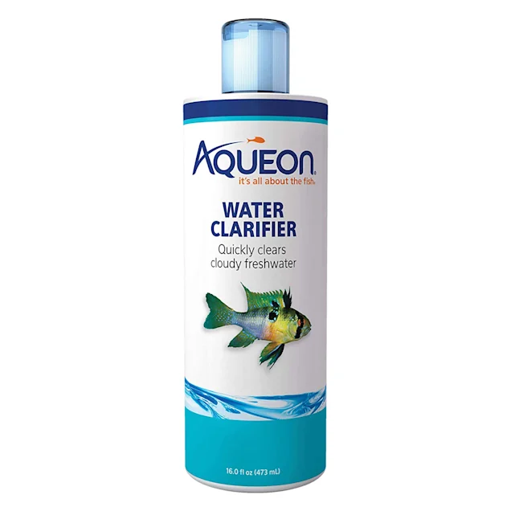
Aqueon Water Clarifier will help to quickly clear your fish tank once it becomes cloudy or murky. Easy to use, simply measure with the attached dosage cap and pour the correct portion into your tank. Safe for all fish and plants.
API PondCare Stress Coat Freshwater Conditioner
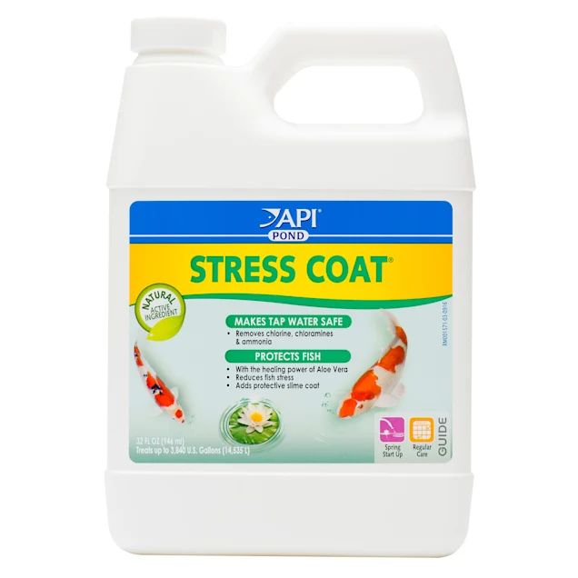
Removes chlorine, conditions tapwater, and replaces the natural slime coating of fish. Contains aloe vera, nature's liquid bandage, to promote the healing of skin wounds.
Imagitarium Algae Reducer
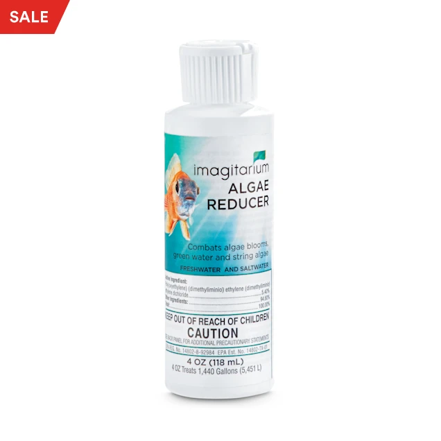
The Imagitarium Algae Reducer controls overgrowth of algae, an unsightly plant common in aquariums. Win the battle against this aquatic weed with this fast-acting and EPA-approved formula that keeps your tank in tip-top shape.